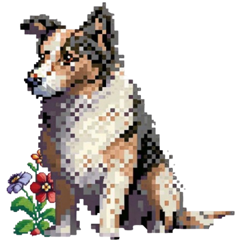

About Me
I’m Sharena, a junior at TAEHS and a passionate aspiring game designer. I love blending art, storytelling, and interactivity to create games that educate and inspire. This portfolio features my creative projects—including my environmental game NatureNourish—and documents my journey in game development.
🌿 Game Projects
🌼 NatureNourish (Code.org)
Tools: App Lab, JavaScript
Description: Collect trash, plant flowers, and restore the planet with help from Daffodil the dog. This interactive game teaches environmental stewardship in a playful way.
🌱 JR Garden Game (GitHub Pages)
Tools: HTML, CSS, JavaScript
Description: A fun click-and-grow garden game I coded from scratch and hosted on GitHub Pages. It introduced me to layout, interactivity, and animation.
🐶 Meet Daffodil
Daffodil is the cheerful, earth-toned dog companion in NatureNourish. Her story begins in a forest town, and she later becomes a guardian of the natural world. She guides players to clean up trash and plant hope!
📓 Design & Iteration
Below are planning assets showing my game development process:
- ✅ Brainstorm sketches for NatureNourish and character design
- ✅ Trash-fall flowchart and object interactions
- ✅ GDD outlining mechanics, story, visuals
🏆 Competitions
I submitted NatureNourish to the Games for Change Student Challenge. The theme was "Protecting the Environment," and I used my project to highlight how small actions make big changes.
📝 Final Reflection
Through this project and portfolio, I’ve grown as a creative problem-solver and storyteller. I’ve learned how to plan, test, and reflect on feedback, and I’ve strengthened my coding and UI skills. I’m excited to keep building games that connect with people and help protect the planet.
Thank you for reviewing my work!